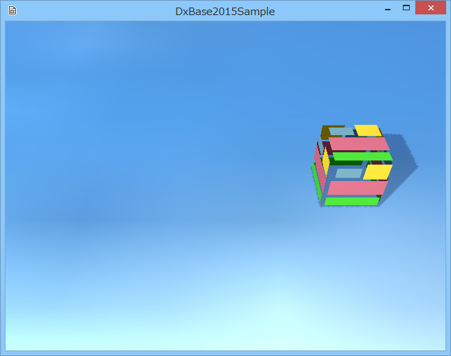

００３．オブジェクトを動かす
Transformコンポーネントによる移動
前項で紹介したような配置されたオブジェクト（配置オブジェクト）を移動したり回転させたりする場合は、いろいろな方法がありますが、一番簡単なのは
Transformコンポーネントのパラメータを変化させる方法でしょう。
Tutorial003ディレクトリ内のソリューション
DxBase2015Desktop.slnを
VisualStdio2013で開くと以下のような実行画面が出てきて、ボックスが左右に移動します。

図0003a
これは、配置オブジェクトの
TransformコンポーネントPositionを変化させて実装しています。
Update()仮想関数
ボックスを作成するには、前項のように、
Character.h、Character.cppに、
Boxクラスを記述して、
GameStage.h、GameStage.cppで、
AddGameObjec()テンプレート関数を呼び出します。ここまでは同じです。
配置されたオブジェクトを変化させるには
Update()仮想関数を多重定義（オーバーライド）します。
以下は、
Character.hに記述された、
BoxクラスのUpdate()関数の宣言です。
//更新
virtual void Update() override;
仮想関数のオーバーライドをあらわす
overrideは、C++11になって出てきた文法です。間違った多重定義があった場合、コンパイラがエラーにしてくれますので、つけるようにしましょう。
そして、以下は、
BoxクラスのUpdate()関数の実体です。
Character.cppに記述されています。
//更新
void Box::Update(){
//前回のターンからの経過時間を求める
float ElapsedTime = App::GetApp()->GetElapsedTime();
auto PtrTransform = GetComponent<Transform>();
//位置の取得
auto Pos = PtrTransform->GetPosition();
//値を変化させる
Pos.x += m_Span * ElapsedTime;
if (abs(Pos.x) > 3.0f){
//もし左右3.0を超えたら反転
m_Span *= -1.0f;
}
//新しい位置を設定
PtrTransform->SetPosition(Pos);
}
Update()仮想関数は、
ターンのたびに呼ばれます。
ターンというのは、おおむね60分の1秒に1度呼ばれる、処理のタイミングです。
ほとんどのゲームソフトは、
無限ループで動作し続けていて、その間に更新処理や描画処理を行います。ですからゲームのプログラミングの大きなウェイトはその
ターン毎の処理を記述するということです。
アニメーションは、映画の1コマ1コマを変化させて動きを演出します。映画の場合は1コマは24分の1秒です。
ゲームの場合は、固定長のターンと可変長のターンがあります。
DxBase2015の場合は、デフォルトは可変長のターンです。Windowsマシンは、CPUやアクセラレータのスペックによりマシンごとの処理速度が異なります。そのため、ターンの間隔を計算に入れないと、速いマシンと遅いマシンとの間にスピードが変わってしまいます。
その差を埋めるのが
//前回のターンからの経過時間を求める
float ElapsedTime = App::GetApp()->GetElapsedTime();
で取得している
ElapsedTimeです。これは
前回のターンからの経過時間が取得できます。この値を状態変化の計算に反映させることで、マシンごとによる動作速度の違いを吸収します。
位置の変化は、
現在のポジションを取り出して、変化をさせた後、変化後のポジションを設定するというコードを記述します。
それを行っているのが
//位置の取得
auto Pos = PtrTransform->GetPosition();
//値を変化させる
Pos.x += m_Span * ElapsedTime;
if (abs(Pos.x) > 3.0f){
//もし左右3.0を超えたら反転
m_Span *= -1.0f;
}
//新しい位置を設定
PtrTransform->SetPosition(Pos);
ということです。